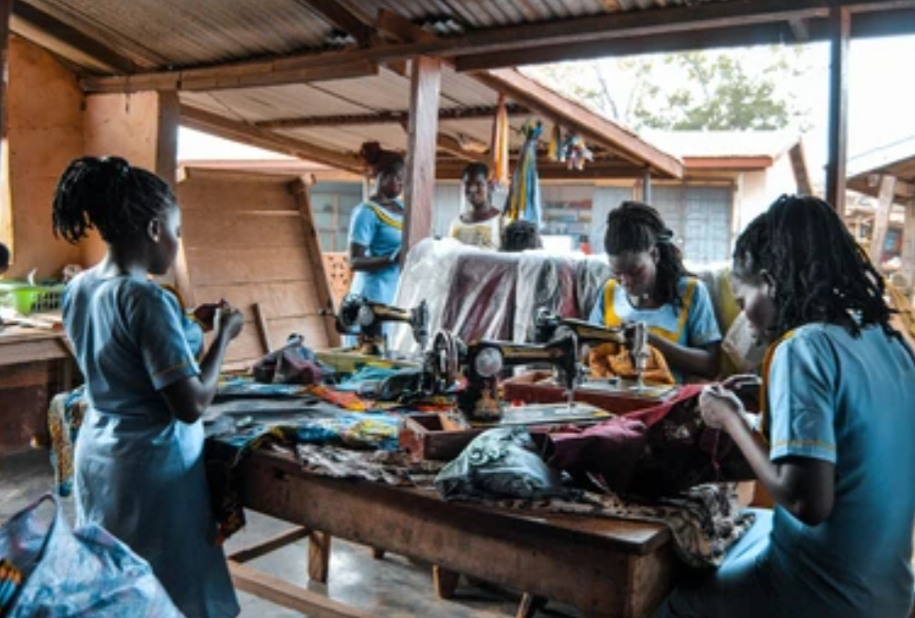

To create a world where every person has equal access to oppotunities, resouces, and the chance to live a fulfilled life free from poverty
At ending poverty and empowering lives that is emerging almost in every coener of the country(uganda),where the number of unemployed people especialy the youth ,wome, and the disabled ones,
Our goalis notonly fighting poverty but also empoweringlives,creating opotunities to certain groups of people,and to the community
To unlock potential oppotunities,growth and build a poverty free world for alls, and eliminate poverty by empowering individuals through education, promoting economic development and enhencing personal well being
Education creates access to oppotuities since it ecquipes peole with skills and knowladge.
This oppens doors to better jobs and enables individuals to create their own jobs.

Through the economic motive,there is creation of job oppotunities which improves income,this helps to build a sustainable livelihood.

The purpose of our project is to brake the cycle of poverty and empowering individuals and communities through eduction, economic oppotunities and improved wellbeing in the societies
Providing educational resources to underprevileged communities
© 2025 Ending poverty and empowering lives. All rights reserved